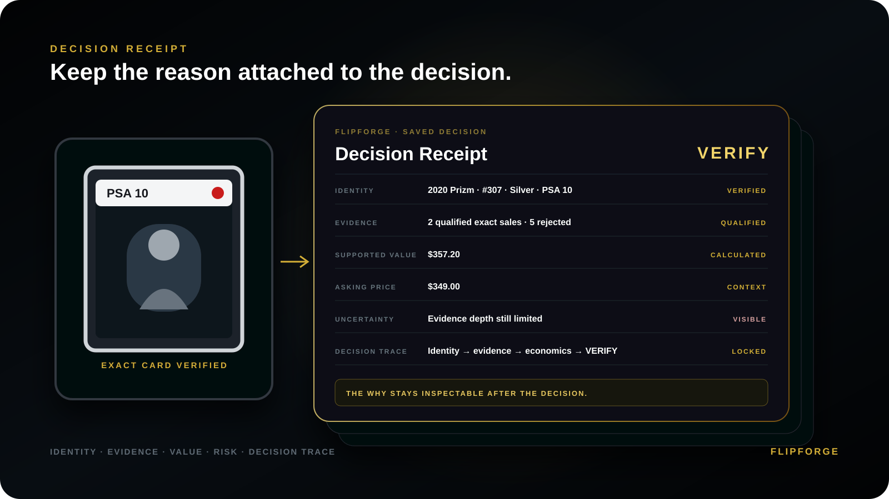

A
KNOW THE CARD
Identity foundation
- 00Release Intelligence
- 01Taxonomy Intelligence
- 02Identity Intelligence
- 03Identity Provenance + Trust
Most sports-card tools show you listings, comps, prices, or trends. FlipForge first proves what card it is, then tests what evidence belongs, what the market supports, what remains uncertain, and what to do next.
Before you buy. Know Why.
Identity comes first. Qualified evidence follows. Decisions keep their reasoning. Later outcomes and governance remain traceable.
SEE HOW THIS HELPS YOU DECIDEHere's what that intelligence actually changes before you spend money—not another wall of statistics.
A similar player, number, or picture is not enough. The wrong grade or parallel can invalidate the comparison before price matters.
A listing price is not proof of a completed sale. Weak, mismatched, or unclear observations don't quietly drive your answer.
Translate supported inputs and assumed selling costs into a modeled buying limit—not just a price that looks attractive.
BUY when supported, WATCH when the margin needs attention, VERIFY when evidence is unresolved, or PASS when the case doesn't hold up.
THE TRUST RULE: Unknown or conflicting identity fails closed. Product knowledge supplies context. Market evidence supplies the reported prices. A decision is only as strong as the qualified inputs behind it.
Watch FlipForge test the evidence before the price gets a vote.
The listing looks cheap. FlipForge does not treat the headline discount as proof.
Comparisons that did not belong to the exact card.
The comparisons that actually matched.
The apparent bargain was not strong enough after the evidence changed.
Illustrative example. FlipForge shows the decision reasoning while keeping its proprietary methodology private. Decision support only; no guarantee of value, profit, or a transaction.
Every case ends in the same plain decision language: BUY, WATCH, VERIFY or PASS.
DECISION RECEIPT
The Decision Receipt turns scattered evidence into a layered, inspectable decision record without hiding the uncertainty that still matters.

When identity conflicts, the evidence is thin, or costs erase the advantage, knowing to VERIFY or PASS can be more valuable than another price estimate.